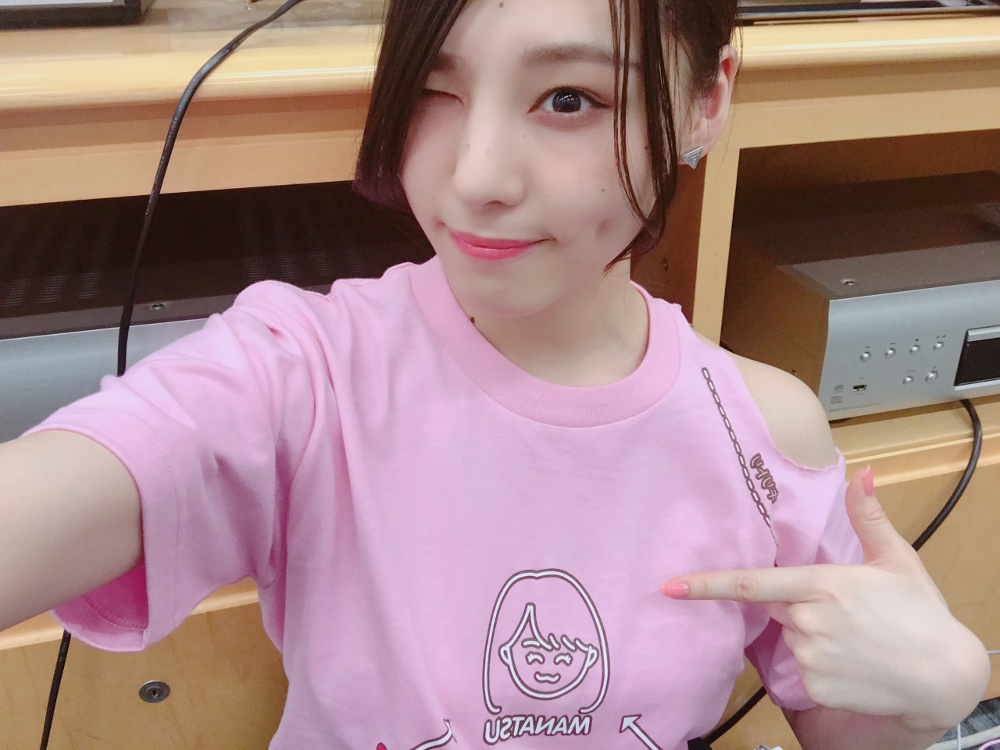
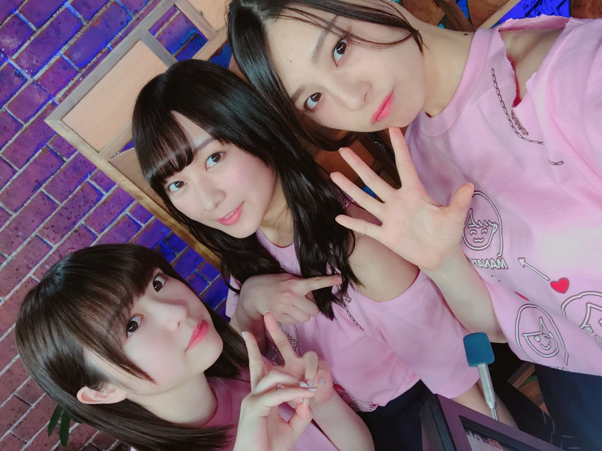
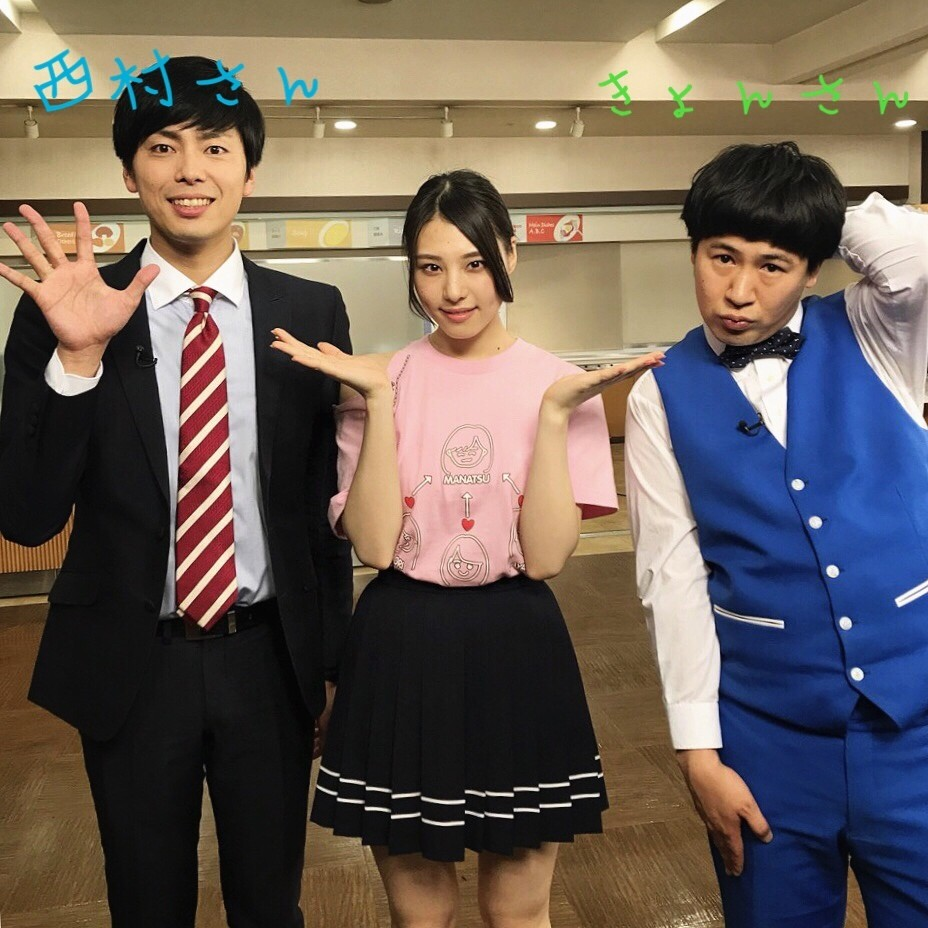
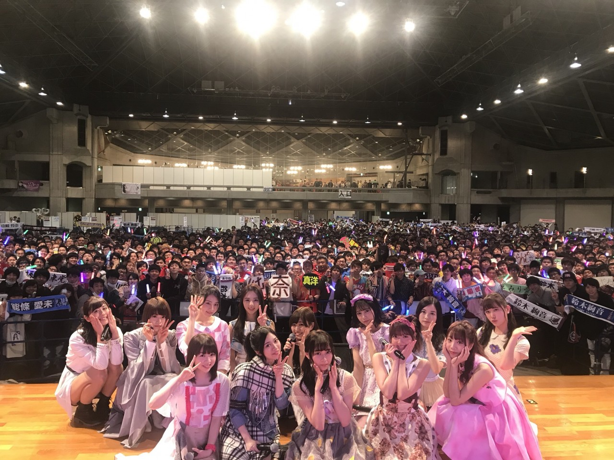
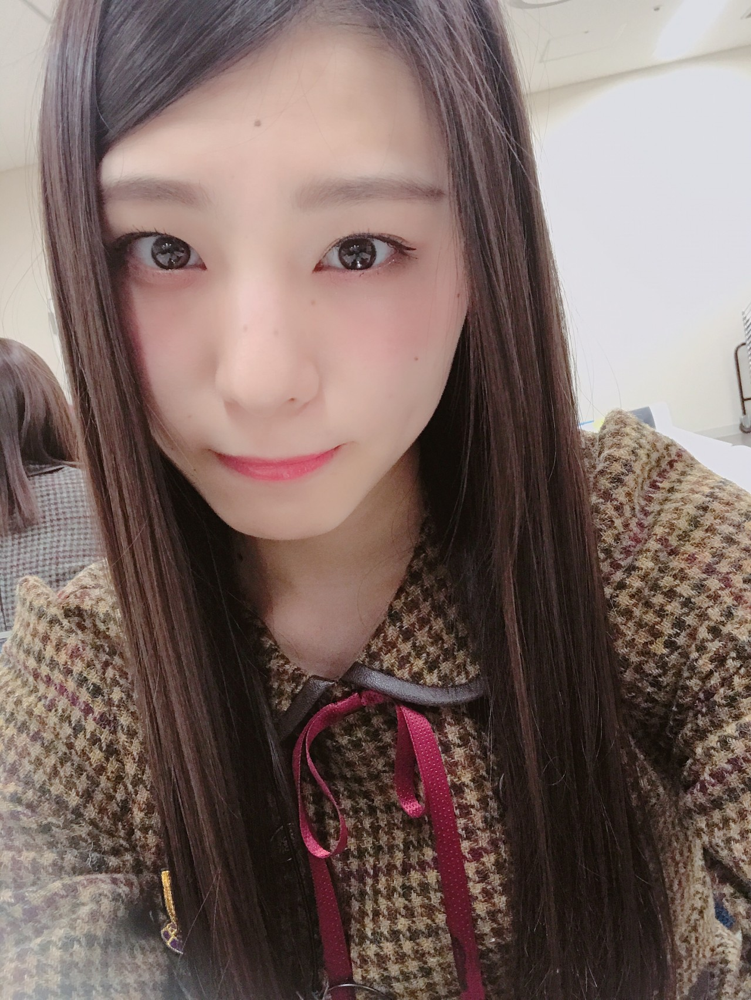

| 2018/03 29 Thu | こんなにも_(．．*)vol.225 |
みなさんこんにちは
相楽伊織です

46時間TV見てくださった皆さん
ありがとうございました！
電視台や軍団企画、貼り絵
幕張のグッズ売り場に遊びに行ったり
スタジオの企画もいくつか出て
盛りだくさんの46時間でした！
今回の電視台は結構インパクト強めで
印象に残ってる方も多いはずっ！！
いつもみたいに
珠美とほわほわお話～かと思いきや
ドッキリ！！っていう
不意をついた企画でした！
オバケメイクも時間かけて
映像もなかなかだったけど
実物も結構怖かったんだよ～～

軍団企画はこちらも解散会見ドッキリでした！
あの収録めっちゃ楽しかった笑
Tシャツの肩の部分を切るとこ
シュール過ぎて顔映ってなかったけど
もう笑っちゃってた(><)(><)
仲が悪いわけではないけど
気持ちの隙間はあるよね、
それを無くそう～
ってことで
生放送で色々やって
軍団の名前を改名しようと言うことになって
皆さんに投票してもらったものの
まだ正式決定してないし、、
とにかく軍団でご飯に、、多分行きます！
そして！！

ようやく、、
ラフレクランさんと共演する事が出来ました！
毎回すれ違ってて
みんなが楽しそうなのを見てた側だけど
今回は同じ時間帯に出れました(><)
めっちゃ面白かった～(^^)
またご一緒出来たら嬉しいです！
今回の46時間、
日奈子も4ヵ月振りに皆さんの前に出られて
私の中で思い出の場面も沢山あって
すごくすごく楽しかったです！
一緒に作って下さったスタッフさんにも
本当に感謝してます。
毎日朝から夜まで私達のために
色々気を使って下さって
沢山助けて下さいました。
本当にありがとうございました！

最終日はアンダーメンバーは
京都で握手会だったので
エンディングは出れなかったけど
中継でちょくちょく出たのと
ライブをしたのが楽しかった♪
みんなそれぞれの衣装着て
｢自惚れビーチ｣を披露しました！
個握でのライブは初めてなんだって！
この日の衣装はまた別でブログに載せます！
このメンバーで活動することが
どれほど大切で僅かな時間なのかって
最近よく考えます。
大好きなメンバーと過ごす時間の終わりって
本当に突然くるんだなって
限られた時間の中で
その人とどんな時間を過ごすか
今、大切な人を
大切にしたいなってすごく思います。
って
ふと思った！

あ～
出会いと別れの季節ですね
今日17時からSHOWROOMを
配信します♪
みんな見てねー(^-^)/
i o r i .

コメント(303)
2018/03/29 11:18